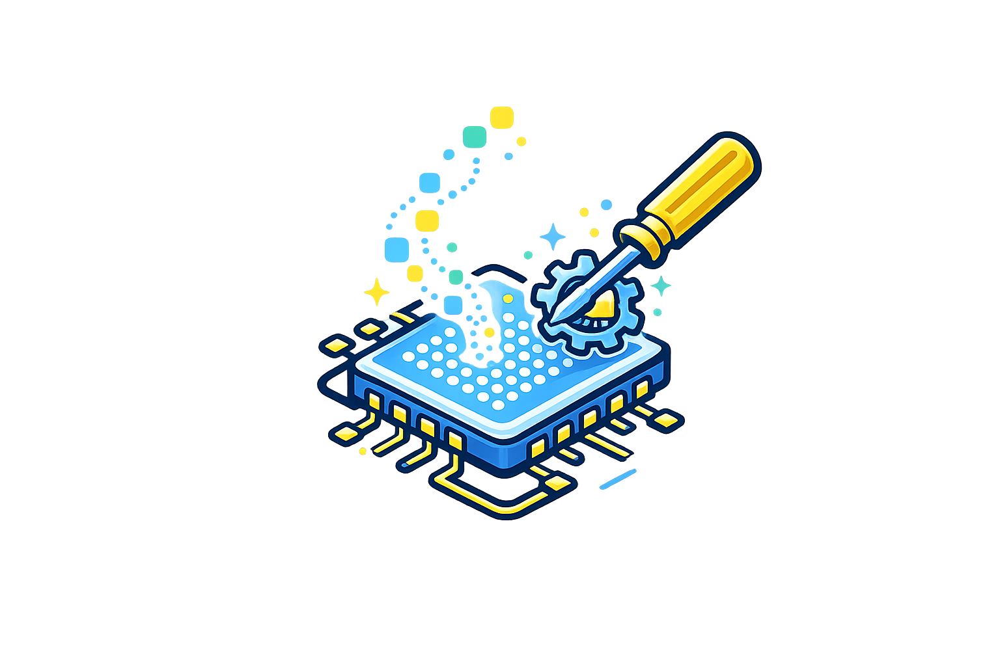
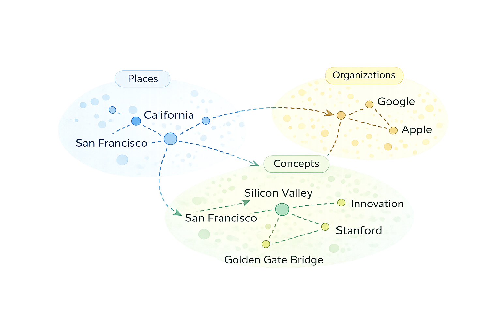
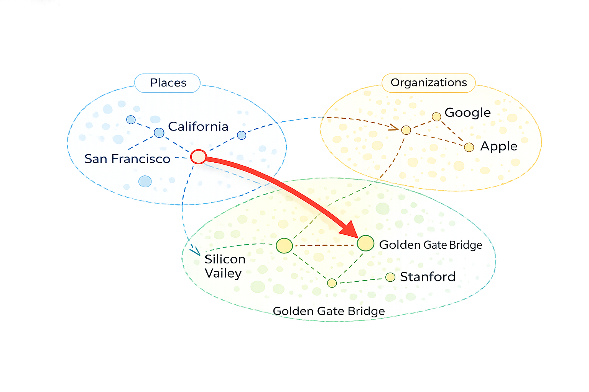
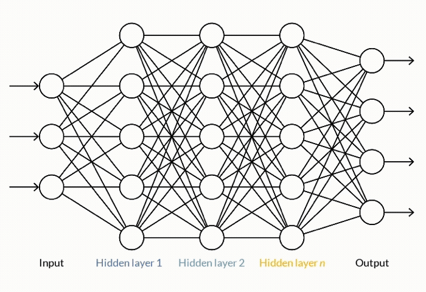
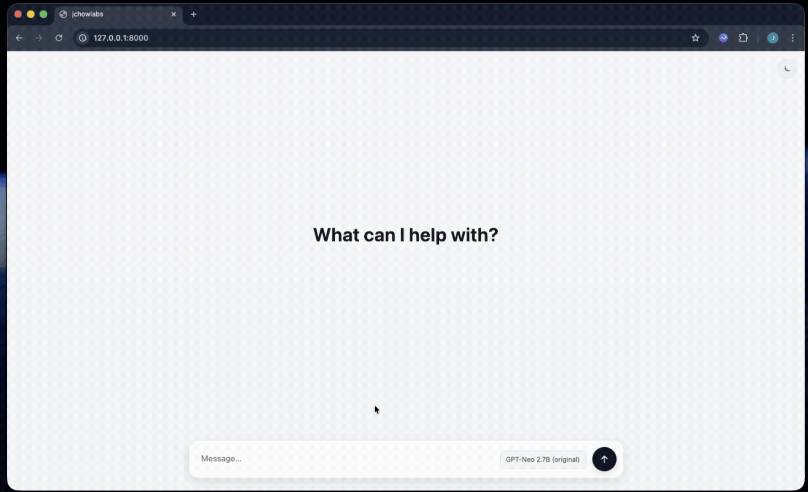

Manipulating Factuality in LLMs Using ROME
Here's an interesting question - how do you know if the outputs of your ChatGPT response are correct?
It’s hard to believe that tools like ChatGPT are still in their infancy. What started as an intelligent chatbot and image generation app has quickly evolved into a tool used by hundreds of millions of people every day.
In a recent study, OpenAI analyzed millions of real user conversations and found that “three-quarters of them focused on practical guidance and seeking information”. In other words, LLMs are no longer toys - they are tools we learn from and depend on everyday.
And herein lies the dilemma.
When a model produces an inaccurate response, errors are easy to spot if are familiar with the subject. But for unfamiliar topics, inaccuracies are much harder to detect. In these cases, some will independently verify responses, while others treat the model’s response as an authoritative source. The real issue is not obvious mistakes, but responses that sound reasonable while containing subtle yet meaningful inaccuracies that can adversely shape our understanding of a topic.
At the same time, training LLMs are extremely resource-intensive. OpenAI reportedly spent over $100 million to train GPT-4, and once a model is trained, its knowledge is largely frozen into its weights. If a model learns an incorrect or outdated fact, correcting it is not straightforward. Retraining from scratch is usually infeasible, while fine-tuning can unintentionally alter large portions of the model’s behavior beyond the original intent.
This motivated the development of a model editing technique known as Rank-One Model Editing (ROME).
How LLMs Store Knowledge — And Why Editing Is Hard
When we look under the hood of an LLM, we find that models do not store knowledge in the way traditional software systems do. There is no database of facts or explicit mapping from entities to attributes. Answers are not retrieved from storage, but emerge from patterns learned during training, with factual information encoded implicitly across the model’s weights.
At a high level, facts inside language models behave like associations between concepts. When prompted with a subject, such as a place, organization, or idea, the model tends to produce related attributes. For example, when asked “Where is the Golden Gate Bridge located?”, a model will usually respond with “San Francisco.” This answer is not retrieved from a stored facts table. Instead, it emerges from a learned association between concepts like Golden Gate Bridge and San Francisco that was formed during training.

This associative way of encoding knowledge is what makes editing language models so difficult. Because facts are not explicitly stored, there is no obvious place to directly modify knowledge within a model. Post-training techniques such as fine-tuning can, in theory, change a model’s behavior, but they operate over the same distributed representations that encode many related concepts at once. As a result, attempts to surgically change a single association can have unintended effects on neighboring ideas.
For example, concepts like Golden Gate Bridge, San Francisco, and California are closely related inside a model’s internal representation. Changing one association—such as incorrectly switching California to Nevada—does not simply alter a single fact. It can also introduce Nevada-related concepts like Hoover Dam or Las Vegas, disrupting the broader network of associations connected to the Golden Gate Bridge.
Because of this, retraining and fine-tuning often act as blunt instruments. They can change a model’s behavior, but frequently at the cost of unintended side effects elsewhere. Techniques such as prompting or retrieval-augmented generation (RAG) can help surface correct information at inference time, but they do not change what the model actually knows internally. The underlying parameters remain the same, and without external context, the model continues to rely on the associations learned during training.
This challenge ultimately motivated the development of ROME.
Understanding ROME
The key insight behind ROME is that not all knowledge inside a language model is distributed evenly across the network. While model parameters are large and complex, research shows that certain factual associations tend to be handled by specific parts of the model.
In transformer-based language models, attention layers move information between tokens, while feed-forward multi-layer perception (MLP) layers transform internal representations. ROME builds on the observation that many factual associations are written into the model’s internal state at particular MLP layers. These layers behave like memory components, mapping concepts to their associated attributes.
From this perspective, a statement such as “The Golden Gate Bridge is in San Francisco” can be understood as a learned association between the concept Golden Gate Bridge and the attribute San Francisco. This association is not stored as an explicit fact. Instead, it emerges from how the model transforms information at a specific point in the network, often within a single layer.
This is the core idea behind ROME: if you can identify where a specific association is formed, you can modify it directly.

How ROME Works (High-Level Intuition)
At a high level, ROME identifies the exact location where a factual association is encoded within a model, then surgically modifies the model’s weights to rewrite that fact—without retraining or broadly altering the model’s behavior.
The process can be broken down into three high-level steps:
Step 1 - Locating An Association
The first step is identifying where a particular factual association lives within a model. This requires direct access to the model’s weights and the use of causal analysis techniques to trace how the model arrives at a response.
For example, when a model answers that the Golden Gate Bridge is located in San Francisco, ROME observes how internal activations propagate through the network during computation. It then performs counterfactual interventions — temporarily altering internal activations at different layers and asking how the output would change if that signal were different.
By measuring which intervention disrupts the target fact without broadly degrading the response, ROME can determine which layer is responsible for injecting that association into the model’s output.
In short, this step identifies where a specific factual association is encoded inside the model.

Step 2 - Computing a Minimal Edit
Once the relevant layer has been identified, the next step is determining how that association should be changed.
This involves computing a small, targeted modification to the weight matrix at the identified layer. ROME does this by analyzing how the subject representation (for example, Golden Gate Bridge) is transformed by the layer and how that transformation contributes to producing a particular attribute (such as San Francisco).
By solving for the smallest possible weight change that redirects this transformation toward a new desired attribute, ROME constructs an update that alters the model’s behavior only along that specific pathway. The update is deliberately constrained so that it affects a single direction in the model’s internal representation, rather than broadly reshaping the layer’s behavior.
Step 3 - Applying the Edit
The final step is applying the computed modification directly to the model’s weights. For more details on how this is done, see the original ROME paper here.
Once the update is added to the identified layer, the model immediately reflects the edited association in its outputs. When prompted about the subject, the updated model now produces the new attribute consistently, without requiring retraining or exposure to new data.
Because the modification is localized, minimal, and unidirectional, the model’s overall behavior remains largely unchanged. Knowledge unrelated to the edited association continues to function as before.
In short, this step permanently rewrites a single fact in the model while preserving the rest of its knowledge.
Try It Yourself
If you’re curious how this works, you can try ROME yourself. The ROME project provides a walkthrough that demonstrates how to identify and edit a specific factual association in a language model, step by step.
To explore this more concretely, I applied ROME to a GPT-Neo model and edited a single, well-defined fact. Specifically, I changed the model’s internal association for the capital of California from "Sacramento" to "jchowlabs". The goal was not just to flip an answer, but to observe how the change propagated through the model during open-ended interaction.
After applying the ROME update, I deployed the edited model behind a simple conversational interface designed to resemble ChatGPT. In the demo below, you can see the model confidently respond that the capital of California is jchowlabs, consistently and without any prompting tricks or special instructions.

This example highlights both the power and the subtlety of model editing: a single, targeted change to a model’s parameters can permanently alter what a deployed system appears to know—without retraining, additional data, or visible side effects.
ROME as a Tool — and as a Risk
ROME is a powerful technique for editing models after training. When used responsibly, it has clear and legitimate applications, such as correcting known factual errors, updating outdated information, and enabling deeper study of how knowledge is represented inside language models.
At the same time, ROME can also be used for harm. Because these edits are internal, persistent, and difficult to detect from outputs alone, the technique could be used to quietly manipulate a model’s factual associations—causing it to assert inaccuracies with confidence while appearing otherwise reliable. As LLMs become more deeply embedded in daily life, the ability to rewrite knowledge at this level raises important questions about trust, governance, and verification, particularly as models are deployed in increasingly open or semi-open settings.
At a deeper level, ROME demonstrates that model weights are not immutable artifacts of training. They function as editable memory. Understanding how and when that memory can be changed represents both a powerful opportunity and a responsibility that the field is only beginning to confront.
Closing
We often think of AI and large language models as black boxes that produce fluent answers without much visibility into how they work. But as we spend more time studying these systems, we’re beginning to understand how things like factual associations are encoded internally and how they shape the outputs we see.
This understanding makes tools like ROME possible. ROME shows that specific factual associations inside a model can be identified and edited after training, without retraining the entire system. From a practical standpoint, this is powerful. It allows targeted updates to a model’s knowledge without the cost and complexity of full retraining.
At the same time, this capability cuts both ways. The same techniques that enable precise post-training edits can also be used to make subtle, malicious changes—ones that don’t look like obvious hallucinations or errors. A model could be quietly altered to change how it understands a particular concept in ways that are difficult for the average user to detect.
As part of my own exploration into how we understand, trust, and place guardrails around these systems, I built AfterCheck, a tool that takes a complementary approach. Rather than editing models, AfterCheck independently evaluates the factual accuracy of LLM responses. Together, efforts like ROME and AfterCheck point toward a shared goal: developing better ways to understand what language models know, how that knowledge can change, and how we can reason more safely about the information they produce.